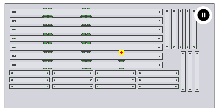
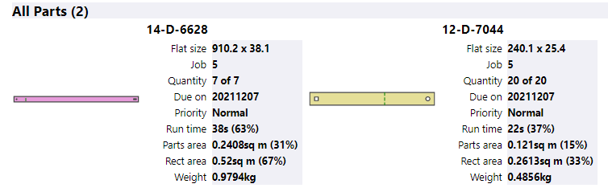
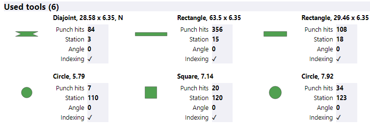

Praxis saves a html report along with the other outputs. This is a fixed template report, and it contains various estimation and composition details. The reports have multiple sections:
The header section contains the key layout information like the machine, material, runtime, sheet count etc.
This is followed by a layout picture. The layout picture displays parts colored by the nest instance (the job-item). Placing the mouse over the part instance displays basic part details like the Name, Job ID and the Instance#.

A simulation preview is generated, and the play button is placed on the right-top corner, if the Output simulation preview… option is enabled in factory • settings • job page.

Clicking on the play button runs the simulation preview for ~10s. It indefinitely loops over with a stop of 3s at the last frame. Use pause button to stop the simulation and switch back to the layout picture.

Layout picture is followed by the jobs table. This displays list of all the jobs listed on the layout.

The Parts list display the nested parts in the same color as they appear in the layout. Please note that this list displays the parts by part-order (than just the part drawing). Therefore, separate entries are displayed for the same part from multiple jobs (orders) placed on this layout. The part details show the respective job IDs. These details also display the partwise resource usage which can be used in the quote preparation for individual parts.

Used tools section follow the punch parts. It displays list of tools used sorted by station ID with the tool icons drawn proportional to the scale.
